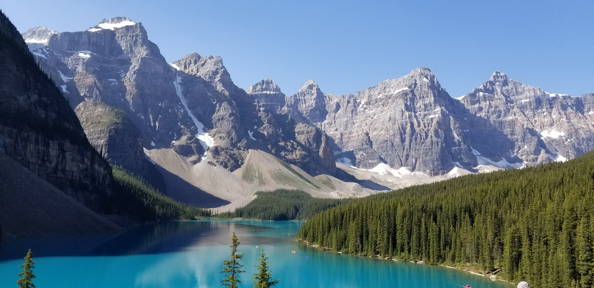

Rocky Mountains
The Rocky Mountains, also known as the Rockies, are a major mountain range located in western North America. The Rocky Mountains stretch 3,000 mi (4,800 km) in straight-line distance from the northernmost part of British Columbia, in western Canada, to New Mexico in the Southwestern United States. The northern terminus is located in the Liard River area east of the Pacific Coast Ranges, while the southernmost point is near the Albuquerque area adjacent the Rio Grande Basin and north of the Sandia–Manzano Mountain Range. Located within the North American Cordillera, the Rockies are distinct from the Cascade Range and the Sierra Nevada, which all lie farther to the west.
Geography
The Rocky Mountains are often defined as stretching from the Liard River in British Columbia south to the headwaters of the Rio Grande in New Mexico. The Rockies vary in width from 110 to 480 kilometres (70 to 300 mi). The Rocky Mountains contain the highest peaks in central North America. The range's highest peak is Mount Elbert located in Colorado at 4,401 metres (14,440 ft) above sea level. Mount Robson in British Columbia, at 3,954 metres (12,972 ft), is the highest peak in the Canadian Rockies.
Human population is not very dense in the Rocky Mountains, with an average of four people per square kilometer and few cities with over 50,000 people. However, the human population grew rapidly in the Rocky Mountain states between 1950 and 1990. The forty-year statewide increases in population range from 35% in Montana to about 150% in Utah and Colorado. The populations of several mountain towns and communities have doubled in the last forty years. Jackson, Wyoming, increased 260%, from 1,244 to 4,472 residents, in forty years.
About Rocky Mountains
| Highest point | |
|---|---|
| Peak | Mount Elbert, Colorado |
| Elevation | 4,401 m (14,440 ft) |
| Coordinates | 39°07′04″N 106°26′43″W |
| Dimensions | |
| Length | 3,000 km (1,900 mi) |
| Geography | |
| Countries | Canada and United States |
| Regions | British Columbia, Alberta, Idaho, Montana Wyoming, Utah, Colorado, New Mexico |
| Range cordinates | 43°44′28″N 110°48′09″W |
| Parent range | North American Cordillera |
| Geology | |
| Age of rock | Precambrian and Cretaceous |
| Type of rock | Igneous, sedimentary and metamorphic |